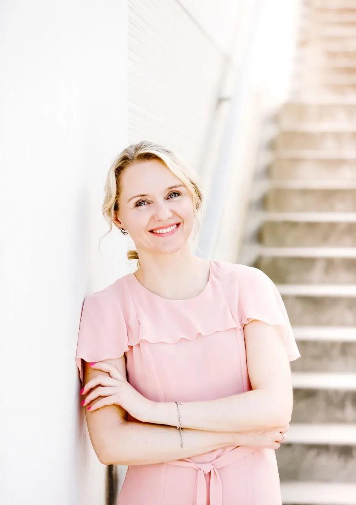
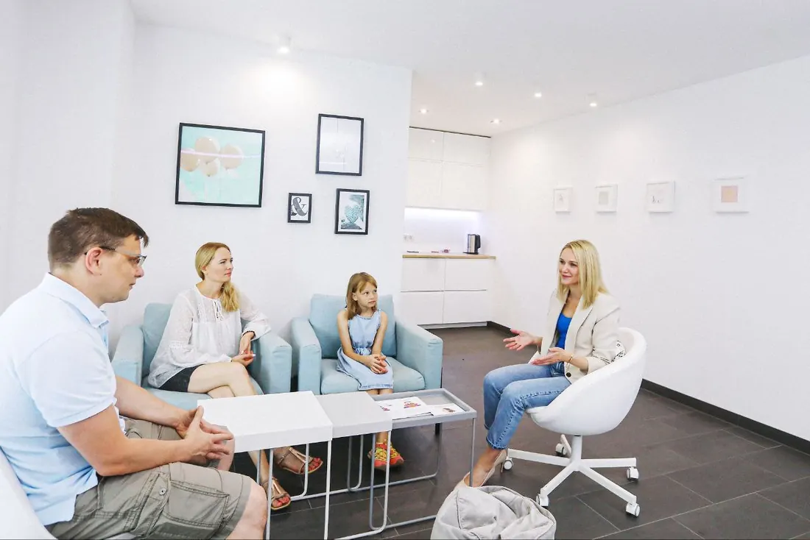
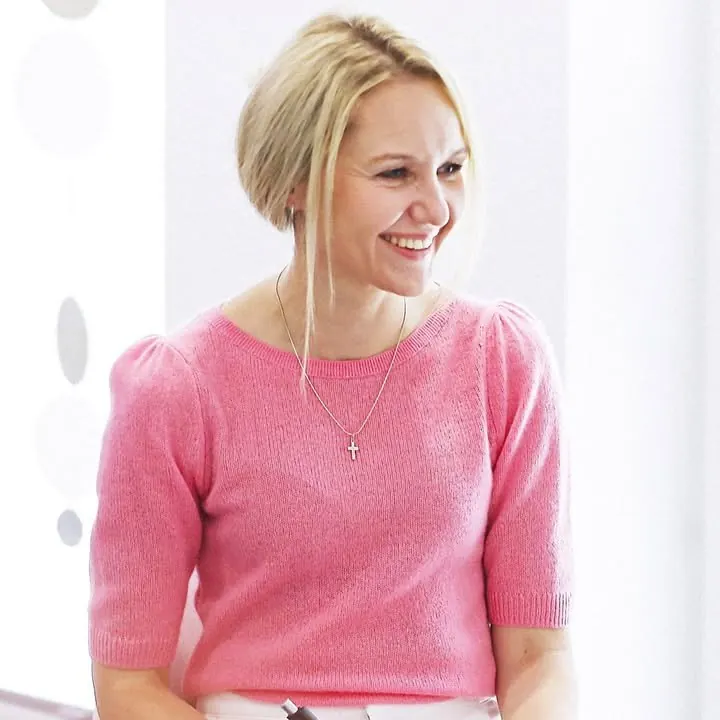

Ängste & starke Emotionen auflösen.

Fühlst du dich hilflos?
Dein Kind hat Angst, Wutanfälle oder zieht sich zurück. Es wacht nachts weinend auf oder klagt über Bauch- und Kopfschmerzen. Du spürst, dass es leidet – und hast schon vieles versucht:
Der Schlüssel zu mehr Vertrauen.
Lerne, die Gefühle deines Kindes zu entschlüsseln und gemeinsam Lösungen zu finden. Im Video erzähle ich, warum ich diesen Kurs entwickelt habe.
Hinter dem Verhalten steckt oft eine emotionale Blockade.
Emotionale Blockaden
Verborgene Ängste, Wut oder Traurigkeit – oft spürbar über den Körper.
Verhalten
Angst, Wutanfälle, Rückzug, Schlafstörungen, Bauchschmerzen.
Ursachen
Traumatische Erlebnisse, Konflikte, soziale Unsicherheit, Leistungsdruck.
In vier Wochen zeige ich dir, wie du deinem Kind helfen kannst.
Einfach erklärt und sofort im Alltag anwendbar.
Ängste verstehen & lösen
Warum dein Kind Angst hat – und wie es mit spielerischen Übungen mutiger wird.
Gefühle verstehen & beruhigen
Einfache Techniken, mit denen ihr gemeinsam zur Ruhe kommt.
Körper & Gefühle
Leichte Übungen, wenn sich Ängste als Bauchschmerzen oder andere Beschwerden zeigen.
Alltag leicht gemacht
Ein klarer Plan für schwierige Momente – du weißt genau, was zu tun ist.

Mehr Ruhe & Sicherheit für dich und dein Kind.
Ruhe bewahren
Du bleibst in schwierigen Momenten ruhig und gibst Sicherheit.
Emotionale Stabilität
Dein Kind fühlt sich sicher und geborgen.
Klare Werkzeuge
Methoden, die schnell und einfach funktionieren.
Online, kompakt und alltagstauglich.
SOS-Elternkurs PLUS
Zusätzlich Raum für deine Fragen und persönliche Begleitung über Messenger.
Jetzt anmelden →Geld-zurück-Garantie: Wenn du nach den ersten 2 Einheiten merkst, dass der Kurs nicht das Richtige für dich ist, bekommst du dein Geld zurück.
Rückmeldungen meiner Teilnehmerinnen
Die Struktur, die Zusammenstellung und der Inhalt haben mich sehr beeindruckt. Die Techniken sind so dermaßen easy und spielerisch vorgestellt worden, dass man sie sehr leicht übernehmen und anwenden kann. […] Ich würde diesen Kurs jeder Mutter empfehlen, die als Mutter, aber auch als Individuum wachsen möchte.
Habe viele neue Impulse bekommen. Als Erstes werde ich anfangen, die Kinder anders nach ihrem Tag oder Erleben zu fragen, damit nicht immer nur die Antwort „gut“ kommt.
Vor allem mochte ich, dass es sehr durchstrukturiert war. Ich kann kaum erwarten, die neue Technik an meinen Kindern auszuprobieren!
Beim Durchführen dieser Technik habe ich bemerkt, dass es eine sehr leichte und spielerische Technik ist. Meine Tochter war derselben Meinung. Wir hatten Spaß, sie durchzuführen.
Viktoria Langjahr – Expertin für schnelle Lösungen.
Dipl. Sozialpädagogin und psycho-emotionaler Coach für Eltern und Kinder. Ob Ängste, Wut, Panikattacken oder körperliche Beschwerden mit psychischer Ursache – in meiner Praxis und online finde ich direkte, wirksame Wege, wo andere oft nicht weiterkommen.

Alles, was Eltern oft wissen möchten.
Für wen ist der Kurs geeignet?
Für Eltern, deren Kinder mit Ängsten, Wut, Traurigkeit oder psychosomatischen Beschwerden (Kopf-, Bauch-, Gliederschmerzen) kämpfen – besonders, wenn du schon vieles ohne wirkliche Lösung versucht hast. Auch pädagogische Fachkräfte profitieren von den Inhalten.
Hilft der Kurs auch mir als Elternteil?
Ja! Kinder spiegeln oft unsere eigenen Emotionen. Du lernst Techniken, mit denen auch du gelassener reagierst und innere Ruhe findest.
Was, wenn ich wenig Zeit habe?
Du brauchst keine stundenlangen Übungen – oft reichen wenige Minuten am Tag. Die Inhalte lassen sich flexibel in deinen Alltag einbauen.
Braucht mein Kind zusätzlich eine Therapie?
In vielen Fällen reicht der Kurs aus. Ist dein Kind bereits in Therapie, kannst du die Methoden ergänzend nutzen, um den Prozess zu unterstützen.
Wie schnell werde ich eine Veränderung bemerken?
Viele Eltern berichten schon nach wenigen Tagen von einer spürbaren Veränderung – bei ihrem Kind und bei sich selbst.
Gibt es eine Geld-zurück-Garantie?
Ja! Wenn du nach den ersten 2 Einheiten merkst, dass der Kurs nicht das Richtige für dich ist, bekommst du dein Geld zurück – unkompliziert und ohne Risiko.
Wie kann ich mich anmelden?
Klicke auf „Jetzt anmelden“ – du schreibst mir direkt über WhatsApp und bekommst alle Infos zur Anmeldung.
Jetzt zum SOS-Elternkurs anmelden.
Lerne, wie du Ängste und starke Emotionen bei deinem Kind auflösen kannst.